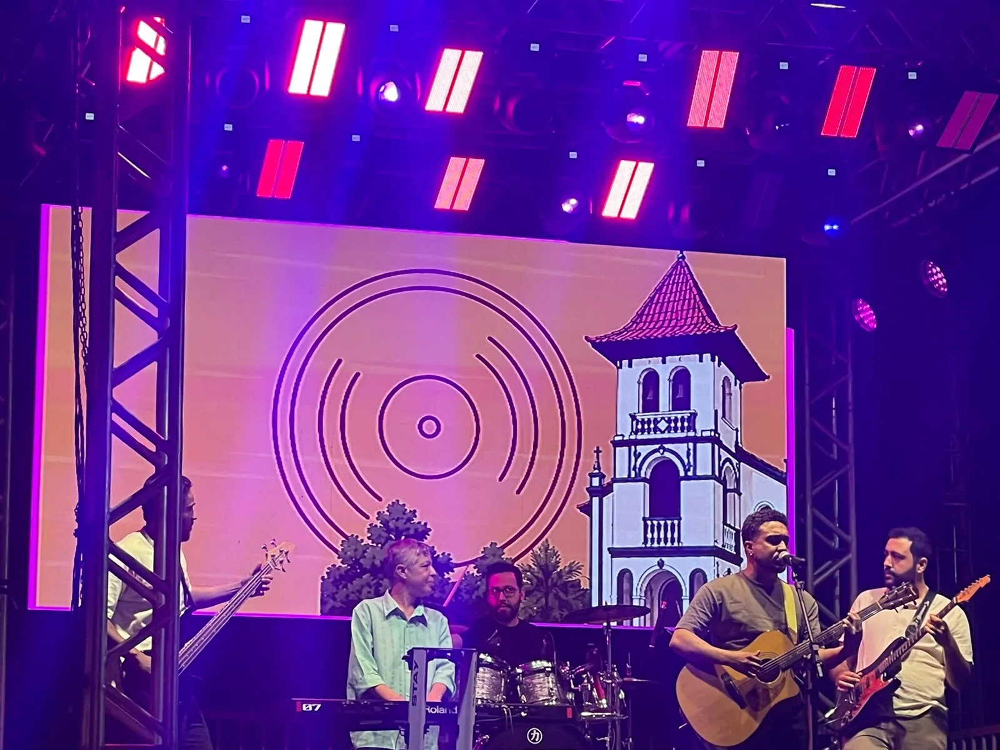
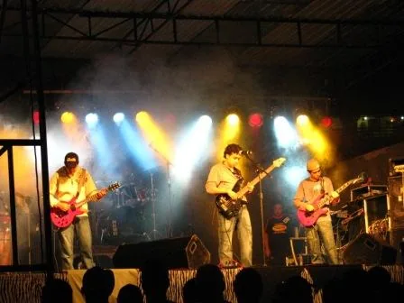
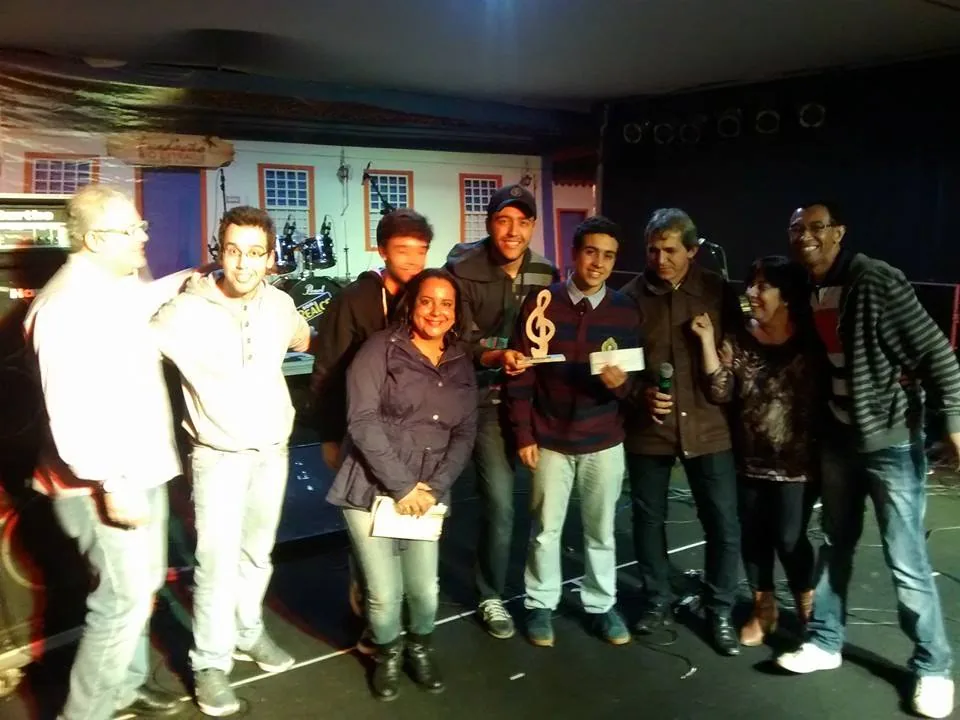
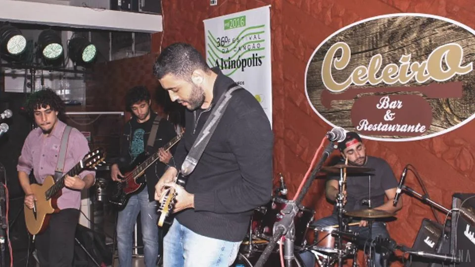
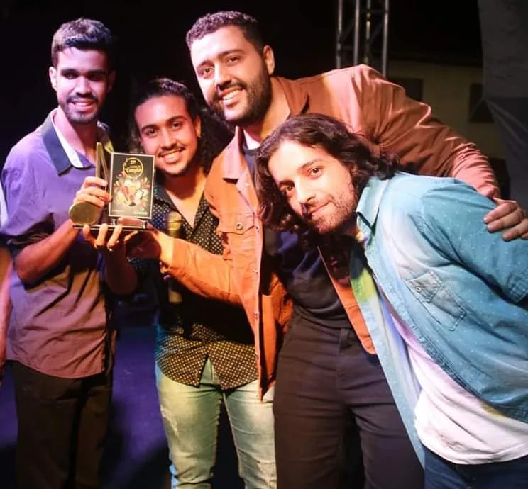
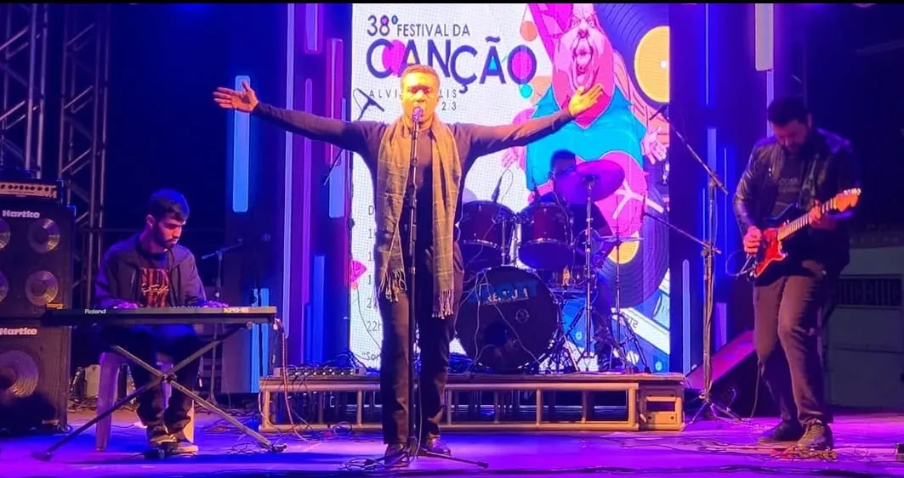
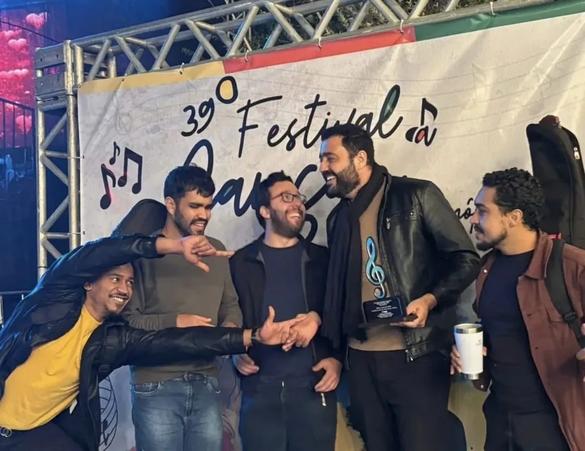
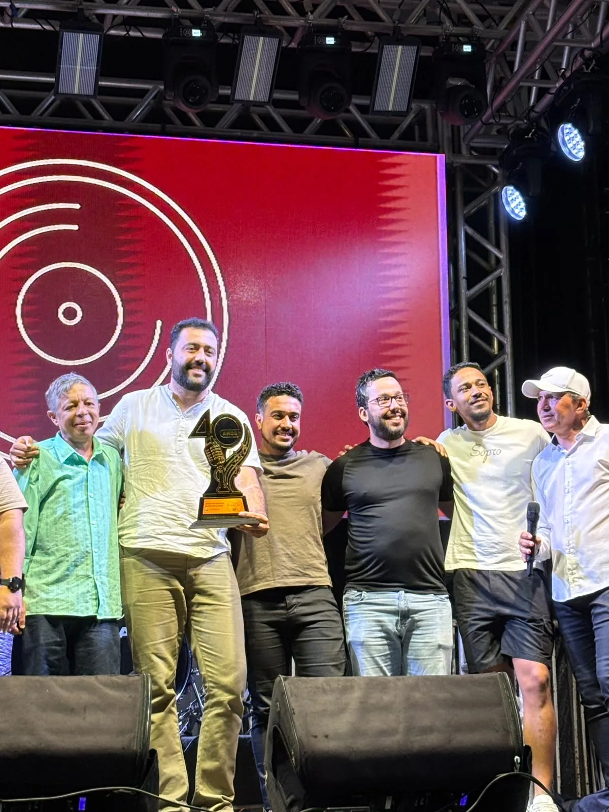

19761º festival
A primeira edição
Como nasceu o festival, quem o organizou e onde foi o primeiro palco. texto provisório
1976Foto a encontrar

acervo · alvinópolis · minas gerais
desde 1976 · quarenta edições
fotos · vídeos · lembranças de quem subiu ao palco e de quem assistiu da plateia
com o documentário “Festival da Canção de Alvinópolis – Histórias” · estreia agosto de 2027
o festival
Desde 1976, o Festival da Canção reúne compositores, intérpretes e bandas de Alvinópolis e da região. Muita gente da cidade tem uma história para contar sobre ele. texto provisório
o acervo
Boa parte dessa história está em álbuns de família, recortes de jornal e fitas VHS. Este site reúne esse material, digitalizado, num só lugar.
o site
O acervo é um projeto cultural independente, sem vínculo com a Prefeitura nem com a organização do festival. Cada foto traz o crédito de quem a cedeu.
Dos primeiros palcos dos anos 1970 à quadragésima edição, em 2026.
Como nasceu o festival, quem o organizou e onde foi o primeiro palco. texto provisório
Novas edições, novos nomes e as canções que a cidade ainda lembra. texto provisório
Os festivais da década de 1990 e as histórias de bastidor. texto provisório
Guitarras, luzes coloridas e fumaça. O prêmio de melhor intérprete vai para “Meu triunfo é o rock n’ roll”.

A premiação de 2014 e o troféu que virou símbolo do festival. texto provisório

Antes da final, as canções da cidade se apresentam na fase local, no Celeiro Bar.

“No Leito” leva o troféu de 1º lugar geral. Seria o último festival antes de uma pausa de quatro anos.

Depois do intervalo, o festival volta ao palco. O prêmio de Melhor Música de Alvinópolis fica com “Lúgubre”. confirmar o motivo da pausa

A categoria dedicada às canções da cidade premia “Meandros”.

A quadragésima edição chega meio século depois da primeira.

“Festival da Canção de Alvinópolis – Histórias” será exibido pela primeira vez no próprio festival.
Toque numa foto para ampliar. As molduras vazias são épocas de que ainda não temos imagem.
Gravações antigas, reportagens e apresentações, à medida que forem digitalizadas.
documentário
Entrevistas com quem fez o festival, fotografias e vídeos de arquivo, histórias engraçadas e personagens que a cidade não esquece.
Fotos de família, recortes de jornal, cartazes, fitas VHS ou gravações em celular, de qualquer época. Nós digitalizamos e devolvemos o original, e a imagem entra no acervo com o seu nome no crédito.
Enviar material para o acervoformulário ainda não criado